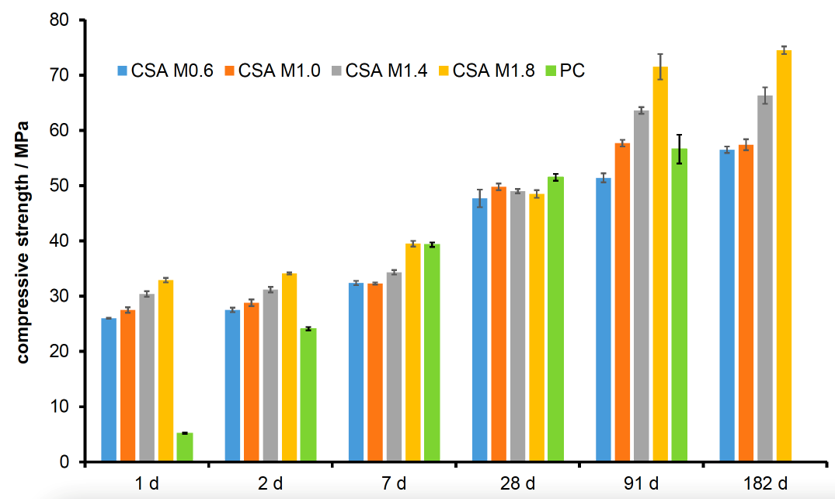
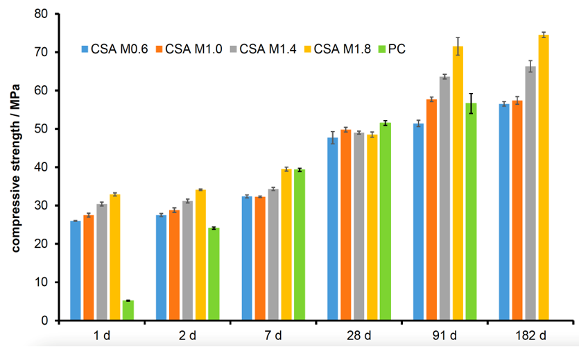

Detailed Process Models for Agile/Green Cement Plants
Lessons Learnt Developing a Low-Carbon CSA Cement Pilot Scale Process
Advanced Materials for Sustainable Infrastructure Development
Gordon Research Conference, Feb 2026
Marcus N. Campbell Bannerman
m.campbellbannerman@abdn.ac.uk
The Good,
The Good,

My childhood was spent
holidaying-on,
maintaining,
and scraping barnacles
off
a cement boat built by my dad.
The Good,

Ferrocement hulls are unusual (made the newspaper in 1972), labour intensive, and strong...
The Good,

- A dock worker drove a van onto the boat at low tide.
- Workers craned the van off immediately to save/lift the boat (hence the photoshop).
- Only the railing and paint was damaged, still sailing today!
Cement is an amazing material we need in more applications than you know.
The Bad,
The Bad,
Scientists discover the world that exists; engineers create the world that never was.
T. von Kármán-
We've being creating a lot of new world recently;
$\approx7\%$ of manmade $\text{CO}_2$ emissions are from cement production.
Cement (and cement production) must change.
The Bad,
- 4B tons of cement produced in 2023 ($\approx 0.5$ tons/person/yr). The second most ubiquitous product after water (75 tons/person/yr).
-
Like water, there is very little margin for more expensive raw materials:
- Deionised water ($\approx200$ £/ton)
- OPC Cement ($\approx100$ £/ton)
- Tap water ($\approx1$ £/ton)
- Like water, the raw materials are harder to get (i.e., desalination), and less pure sources are used.
Greener cements must be equally cheap: using abundant, impure, local materials at scale!
... and The Scale.
The scale of OPC production is truly staggering: I climbed this mountain of clinker in Qatar in January 2025 (approx. 1 year of production post world cup).
The trees in the clay quarries of Qatar are protected, showing the original land level. Its like this as far as the eye can see.
Alternative Clinker Formulations
-
Roughly 75% by weight of typical OPC cement clinker is made up of belite and alite. On a
molar basis, that's approximately the following chemistry:
\begin{align}
{\color{orangered}8\,\underset{\text{limestone}}{\text{Ca}\text{C}\text{O}_3}}+3\,\underset{\text{quartz}}{\text{Si}\text{O}_2}+\ldots
\underset{\color{darkred}\mathbf{1450^\circ\text{C}}}{\rightleftarrows}
\underset{\text{belite}}{\text{Ca}_2\,\text{Si}\text{O}_4} +
2\,\underset{\text{alite}}{\text{Ca}_3\text{Si}\text{O}_5} +
\mathbf{\color{orangered}8\,\text{C}\text{O}_2}
\ldots \end{align}
-
We need alternative clinker chemistry to reduce limestone usage,
as this is the source of the chemistry-derived
$\color{orangered}{\text{C}\text{O}_2}$.
-
We need alternative fuels and lower-temperature reactions to
mitigate fuel-derived $\color{darkred}{\text{C}\text{O}_2}$ emissions.
-
We need alternatives to clinker to avoid all this.
$\text{C}\bar{\text{S}}\text{A}$ cement
One solution, suggested by Prof. Glasser, is to burn sulfur to generate Calcium SulfoAluminate ($\text{C}\bar{\text{S}}\text{A}$) cements, swapping alite for ye'elimite: \begin{multline} \underset{\text{sulfur combustion}}{\mathbf{\color{Apricot}\left(\text{S}+1.5\,\text{O}_2\right)}}+ \underset{\text{limestone}}{\color{orangered}6\,\text{Ca}\text{C}\text{O}_3} +\underset{\text{quartz}}{\text{Si}\text{O}_2}+3\,\underset{\text{bauxite}}{\text{Al}_2\text{O}_3}+\ldots \\ \underset{\color{darkred}{\mathbf{1250^\circ\text{C}}}}{\rightleftarrows} \underset{\text{belite}}{\text{Ca}_2\,\text{Si}\text{O}_4} + \underset{\text{ye'elimite}}{\text{Ca}_4\text{Al}_6\text{S}\text{O}_{10}} + \mathbf{\color{orangered}6\,\text{C}\text{O}_2} \ldots \end{multline} 1These two previous equations are roughly equivalent assuming 70%w/w C4A3S, 20%w/w C2S clinker is mass equivalent to OPC clinker, which is a high ye'elimite fraction.
Lower temperatures (vs $1450^\circ$C), less $\text{C}\text{O}_2$ per kg clinker1 due to lower lime factor, and able to burn sulfur for process heat!


Even production in Qatar is competitive, despite bauxite costs. J. L.-Galvez-Martos et al. “Techno-economic assessment of calcium sulfoaluminate clinker production using elemental sulfur as raw material,” J. Clean. Prod., 301, 126888 (2021)
How to develop a new $\text{C}\bar{\text{S}}\text{A}$ process?
2012-2016, £3.3M Green Concrete Project (GCP), funded by GORD in Qatar. Prof. R. Jones (Dundee) on recycled aggregates, Dr M. Imbabi (Abdn) on products, ...
Prof. Glasser et al: Chemistry team

- Atmospheric control tubular furnace.
- Sulfur transfer and phase compatibility of $\text{C}\bar{\text{S}}\text{A}$.
- Gram-scale testing of raw mixes and products.
Myself and (now) Dr T. Hanein: Production team

- Full-scale process design.
- Pilot trials, IBU-tech, Weimar
to produce clinker for product
testing and process verification
(£250k budget!!). - Thermodynamics and heat transfer models.
But $\text{C}\bar{\text{S}}\text{A}$ isn't new!
- Developed in China in 1970s, known as 'third series cement of china'.
- High early strength and rapid setting (30% higher than OPC).
- Project AETHER (2010-2013, 3yr, €5.9M)
explored EU production.
- 25-30% less $\text{C}\text{O}_2$.
- But had production issues and didn't use sulfur combustion!
- Not commercially successful.
GORD's New(?) $\text{C}\bar{\text{S}}\text{A}$ process design

Modifications: Scrubber and
burners (not unusual).
Challenges: Energy and chemistry now linked due to sulfur burning!
Something in the Air
- Formulations team noticed lab furnace experiments demonstrated irregular results.
- Example: Ternesite ($\text{C}_5\text{S}_2\bar{\text{S}}$) would only form in box furnaces using sacrificial $\text{C}\bar{\text{S}}$ (see right), not in the tubular furnace using 50:50 dry air and $\text{SO}_2,$ or under pure $\text{SO}_2$ atmospheres.
-
Literature says ternesite stabilized by
atmospheric moisture?
Y. B. Pliego-Cuervo and F. P. Glasser. “Role of sulphates in cement clinkering: the calcium silicosulphate phase”, CCR 8.4 (1978), pp. 455–459.

Thermodynamics says ternesite has a “goldilocks” zone

- Ternesite is only stable for a range of $\text{S}\text{O}_2$ partial pressures: previous tubular furnace experiments were always either too rich or too lean in $\text{S}\text{O}_2$. T. Hanein, ..., and M.N. Bannerman, “Stability of ternesite and the production at scale of ternesite-based clinkers,” Cement Concrete Res., 98, 91-100 (2017)
- Targeted firings in the “goldilocks” zone formed ternesite at high purity in a single stage.
- Simple mass-balance/Bogue-style equations are dangerous to use for $\text{C}\bar{\text{S}}\text{A}$, as the atmospheric effects are not trivial.
- Similar effects are present for ye'elimite, thus kiln atmospheres are critical in $\text{C}\bar{\text{S}}\text{A}$ synthesis.
- We must use thermodynamics to model new formulations, then we can fix production issues using controlled sulfur burning!
Nanocem Core Project 17: High-temperature thermodynamics of Portland Cement Clinkers
- In collaboration with A. Pisch at Grenoble, C. Rößler at Weimar, and T. Hanein at Sheffield, a new thermodynamic database for cement production is under development.
- Accurate capture of C-A-S-F-M system with melt phases.
- A foundational thermodynamic model for full OPC kiln modelling next year (including updates to GEMs).
- We have been performing pilot-scale production tests since 2015.
- We now have an optimised formulation that uses very little bauxite (7%), primarily high-alumina clay.
- Our published trial work so far demonstrated flash setting; however, our unpublished trials have now fixed this.
- Dr Frank Winnefeld (EMPA) has been leading hydration testing on this product.
Strength testing
 

Dimensional stability
- Less shrinkage than OPC, decreases with suflate content.
- More expansion with less sulfate content; no cracking observed.
- Expansion: Under water (20°C).
- Shrinkage: In air (20°C/70% RH).
Sulfate resistance
- No cracking occurred during the first six months of testing.
- OPC higher expansion than CSA.
- Mortar samples are stored in 50g/l Na2SO4 solution (volume liquid to solid 8:1).
Chloride migration results
$\text{C}\bar{\text{S}}\text{A}$ Conclusions
- $\text{C}\bar{\text{S}}\text{A}$ can be produced reliably if (and only if) production burns sulfur to control the kiln atmosphere.
- $\text{C}\bar{\text{S}}\text{A}$ is $\approx5$% more expensive to produce in Qatar than OPC, but saves 30% in CO2. Better results elsewhere in the world or with Carbon tax.
- Hydration testing suggests even higher M-ratios than expected are better. Means more sulfur burning and even better economics.
- Our optimised formulation has equal strength performance to OPC in the long term, but much higher strength short term.
- It is more dimensionally stable than OPC, more resistant to sulfate AND chloride.
Outlook
Memorandum of Understanding signed between GORD and Qatar National Cement Company. Hopefully moving towards commercial production in the near future!
Acknowledgements
- Thanks to all the members of the GCP team for their input and memories over the years.
- Thank you to the Gulf Organization for Research and Development (GORD) for their the financial support provided by the through Qatar NPRP research grant numbers NPRP12S-0322-190433, NPRP12S-0319-190413, and the QSTP Green Concrete Project.
- Thanks to Dr Theodore Hanein in particular who was the driving force behind the original kiln/thermodynamic modelling work.
- Thank you to IBU-tech and their team for their support during the trials.
- Finally, thank you for your patience.
Appendix
- All 23 GCP pilot trial points were designed using our (old) thermodynamic model and were mostly successful.
-
One of the “challenging” trial
points at a target temperature of $1300^\circ$C
is examined. The target was ye'elimite
using high alumina clay instead of bauxite.
Phase $\text{C}_4\text{A}_3\bar{\text{S}}$ $\text{C}_2\text{S}$ $\text{C}_5\text{S}_2\bar{\text{S}}$ $\text{C}\bar{\text{S}}$ Thermodynamics 33% 55% 0% 0% XRD analysis 34% 44% 14% 3% - Thermodynamics fails to predict the appearance of ternesite. What does thermodynamics miss?
- Although kinetics are a factor (more so at low temperatures), our experience shows understanding the actual rather than targeted processing conditions/temperature is far more important.
- A combined thermodynamics and kiln heat-transfer model has been developed to target these issues.
- Our kiln model is fully predictive: inlet gas temperature from adiabatic flame calculation, solids at room temperature. No fitting.
-
It is difficult to get direct thermal
measurements from production kilns:
- Surface temperatures and exit bed temperature are measured via optical pyrometry (which was also used to control the kiln temperature).
- Internal temperatures via thermocouple wells (fixed to wall, so they rotate in and out of the bed).

$\text{C}\bar{\text{S}}\text{A}$ Conclusions
- Simple equilibrium thermodynamic models are surprisingly powerful.
- Our last two trials fully designed using a kiln model for fuel, oxygen, and sulfur flows, even weather!
- Combined thermal and thermodynamic models are predictive of cement kiln performance.
- New processes can be designed or old debugged/optimized.
- Lots of interesting future work (e.g., melt thermodynamics, kinetics, bed models, economics, carbon calculations, plant optimisation). But something is needed...
Current kiln models
- Kilnsimu by VTT is the current best available kiln model; implementing kinetics, a good thermodynamic model (FactSage) with some small issues for cement; however, little detail is public on their heat transfer model.
- Worryingly, all literature models for cement kilns are based on two major experimental campaigns of work (plus some fluidised bed results):
Tscheng “Convective heat transfer in a rotary kiln", PhD thesis, Uni. British Columbia, 1978
- 2.44m kiln, 0.19m inner diameter.
- 40 experiments, peak temperatures 30→200°C.
- Used to develop low-temperature bed heat transfer models.
Literature models do not fit a small (uninsulated) section of these kiln results along $1\to1.25$m, our model fits the full length.
P. V. Barr “Heat transfer processes in rotary kilns", PhD thesis, Uni. British Columbia, 1986
- 5.5m kiln, 0.4m inner diameter.
- 23 experiments, peak temperatures 430→1400°C.
- Used to develop high-temperature bed heat transfer models.
- But results highly depend on your other models (i.e. radiation)!
Literature models exclude the beginning and end of the kiln, but our single model gets captures these points.
- You cannot easily transfer existing literature models without refitting.
- We have rebuilt current models to match all this data, well beyond existing-literature model performance.
- Our pilot trial data (presented earlier) consists of two experiments on the IBU-tech kiln, great agreement again.
- Further development needs full scale data, even transient data (for time-dependent models), even if its just for validation.
- The reward is detailed free/open-source models on kiln performance for design and operation.
- (2012-2016) £3.3M Green-Concrete Project (GCP) (2016- sponsored by the Gulf Organisation for Research & Development, Qatar. PIs: F. P. Glasser and M. S. Imbabi, (10+ PDRAs, 10+PhDs @ Aberdeen).
- One PhD student (Dr Theodore Hanein), three years (at 10%), and £250k to take a partially-verified lab-scale sulfur-burning $\text{C}\bar{\text{S}}\text{A}$ process through pilot trials and design a full-scale process.
-
We achieved all our goals in 2.5
years, with <£100k spent on 20+ trial points (>15kg product each, one 100kg
production run), thanks to a few key
aspects:
- Careful atmospherically-controlled tubular furnace experiments testing thermodynamic predictions.
- Extensive predictive thermodynamic modelling of tubular furnace and pilot kilns (incl. atmospheres).
- The database uses the following main sources of information:
- NASA CEA database for combustion/rocketry.
- Holland and Powell (2011) database for petrological mineralogy.
- Around 80 individual sources added by hand.
- Primarily stochiometric phases, but end-member models from Holland and Powell are nearly there.
- Some mineralisation accounted for using entropic effects only (thanks to Duncan Herefort for the idea).
- Melt data is currently incomplete so its disabled.
- The free-energy minimizer uses a unique generating function approach and my own compile-time computer algebra library (Stator), combined with a range of general optimizers (IPOpt, NLOPT/SLSQP) with some modifications (more information on request).


Ye'elemite
- Misprints in compiled data sets. E.g., $\text{C}_3\text{A}$ in Babushkin et al. 1985.
- Unknown sources of incorrect data (which only becomes apparent after detailed inspection). E.g., $\text{C}_4\text{AF}$ in Babushkin et al. 1985.
- Errors in coefficients and/or tabulated data. E.g., NIST(!) C-A-S-H compilation of Haas Jr. et al. 1981.
- Dangerous rounding. E.g., E.g., $C_p=1120\approx 1100$ in Kelley 1960.
- Significant "unknown" revision of data, E.g., rankinite compiled by NIST revised significantly by Hillert et al. 1991.
- Missing or incorrect ye'elimite and ternesite data.
- Much of this is known in the oral history of cement, but why do new people have to keep rediscovering it?
- NASA shares rocket/ICBM calculations, can we?
Thermodynamic solver
- Original C++ equation-oriented solver (using IPOPT). Thermodynamic models are expressed as a free-energy function, \begin{align} G_\alpha\left(T,\, p, \left\{N_i\right\}^N_\alpha\right) & & A_\alpha\left(T,\, V, \left\{N_i\right\}^N_\alpha\right) \end{align}
- An original compile-time computer algebra library, stator, is used to generate arbitrary thermodynamic derivatives incl. Hessian.
- Automatic derivatives of Lagrangian yields thermodynamic properties under constraints (i.e., total $C_p$, reactive thermal conductivity).
- Coupled heat transfer and kinetics expressed as constrained minimisation and solved directly (no outer loops).